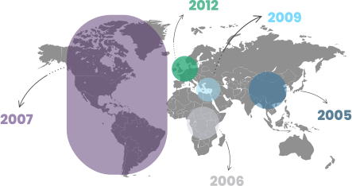

TÓPICO 3
ARMAZENAMENTO, DISTRIBUIÇÃO E DISPENSAÇÃO DE MEDICAMENTOS
TÓPICO 3
ARMAZENAMENTO, DISTRIBUIÇÃO E DISPENSAÇÃO DE MEDICAMENTOS
A Evipnet promove um conjunto de ações com o intuito de reduzir as barreiras da tradução do conhecimento científico, com foco em países de baixa e média renda. Não por acaso, sua conformação iniciou-se no continente asiático a partir de 2005, seguindo para a instalação de escritório regional no continente africano, em 2006, nas Américas, em 2007, na região do Mediterrâneo Oriental, em 2009, e, em 2012, passou a contar também com escritório regional na Europa.
